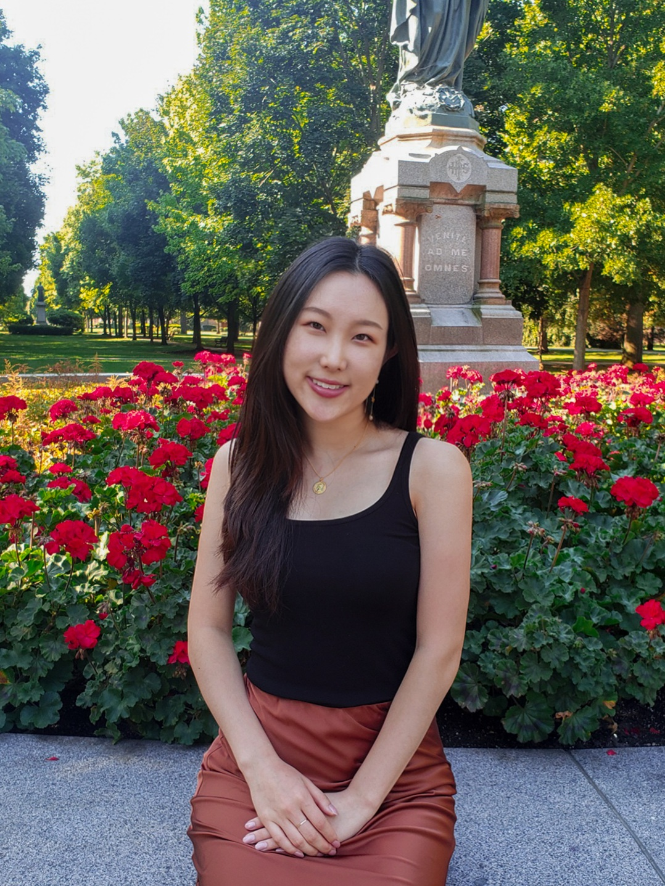

Christina Youn
Office: 4130 Siebel Center for Computer Science
Email: youn13@illinois.edu
Google Scholar: Profile

I am a second year PhD student studying computer science at the University of Illinois, Urbana-Champaign advised by Tarek Abdelzaher. Before starting my PhD, I graduated with a Bachelor of Science in computer science from the University of Notre Dame where I conducted research in Dong Wang's social sensing lab and Christian Poellabauer's mobile computing lab.
My research interests are primarily in social sensing, an area of collaborative research that leverages the abundance of social media data by viewing it as a network of sensors. I often work with data from platforms such as Reddit and Twitter in conjunction with machine learning algorithms to investigate interesting topics like information propagation, belief embedding, and social networks!
June 2022 - I attended the ICWSM SocialSens 2022 Workshop held in Atlanta, Georgia.
August 2021 - I started my PhD!
SAT-Geo: A social sensing based content-only approach to geolocating abnormal traffic events using syntax-based probabilistic learning
Lanyu Shang, Yang Zhang, Christina Youn, and Dong Wang
Information Processing & Management, Volume 59, Issue 2, March 2022.
KnowMeme: A Knowledge-enriched Graph Neural Network Solution to Offensive Meme Detection
Lanyu Shang, Christina Youn, Yuheng Zha, Yang Zhang, and Dong Wang
IEEE 17th International Conference on eScience, September 2021.
AOMD: An analogy-aware approach to offensive meme detection on social media
Lanyu Shang, Yang Zhang, Yuheng Zha, Yingxi Chen, Christina Youn, and Dong Wang
Information Processing & Management, Volume 58, Issue 5, September 2021.
FakeSens: A Social Sensing Approach to COVID-19 Misinformation Detection on Social Media
Ziyi Kou, Lanyu Shang, Yang Zhang, Christina Youn, and Dong Wang
17th International Conference on Distributed Computing in Sensor Systems, July 2021.
Spring 2021 - Teaching Assistant for CSE 20289: Systems Programming
Fall 2020 - Teaching Assitant for CSE 30341: Operating Systems
Spring 2020 - Teaching Assistant for CSE 20289: Systems Programming
Fall 2019 - Teaching Assistant for CSE 20211: Fundamentals of Computing
Spring 2019 - Student Assistant for EG 10112: Introduction to Engineering Systems II
Fall 2018 - Student Assistant for EG 10111: Introduction to Engineering Systems I